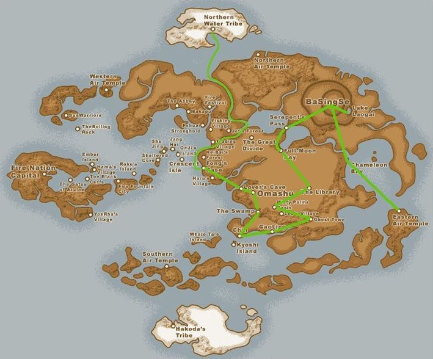

In the second season of Avatar: the Last Airbender, Aang, Katara, and Zuko recruit a blind earth-bending protegy named Toph to join Team Avatar, and teach Aang earth bending. Meanwhile, Zuko and Iroh become refugees in the Earth Kingdom. While being pursued by Azula, the crown princess of the Fire Nation, both groups meet in the capital of the Earth Kingdom, where Aang is severely injured.
Earth Kingdom
Team Avatar's Journey
Episodes
01 - The Avatar State
After leaving the North Pole, Team Avatar travels to the Earth Kingdom where an Earth Kingdom general tries to force Aang to trigger the Avatar State, which he believes is powerful enough to defeat the Firelord. Meanwhile, Zuko's sister, Princess Azula, tries to convince Zuko that both him and Iroh will be welcomed back to the Fire Nation if they reutrn with her.
02 - The Cave of Two Lovers
On the way to Omashu, Team Avatar meets a group of travelling bards who take them through a confusing tunnel known as 'The Cave of Two Lovers'. Aang and Katara are separated from Sokka, sparking a romantic tension. Meanwhile, Zuko and Iroh meet a compassionate healer, who shows Zuko the effects of war on her life.
03 - Return to Omashu
When Team Avatar reaches Omashu, they find that the city has been captured by the Fire Nation. Inside Omashu, they meet the resistance, and come up with a clever way to escape the city. Meanwhile, Azula recruits her friends, Mai and Ty Lee, in order to capture Zuko and Iroh.
04 - The Swamp
While flying over a swamp, Team Avatar is separated by a tornado. While alone in the swamp, the three see visions of important people in their lives. Eventually, they meet a group of people known as 'swamp benders' who help them escape.
05 - Avatar Day
Team Avatar finds themselves in a town celebrating Avatar Day. However, the festival turns out to be an "Anti-Avatar" celebration, and Aang is arrested for the actions of his predecessors. Katara and Sokka search for evidence of Aang's innocence while Zuko decides it's best for him and Iroh to split up.
06 - The Blind Bandit
At an earthbending tournament, Team Avatar finds a blind earthbending master named Toph. Aang challenged her, and defeated her with airbending, but she refused to become his teacher. At Toph's house, her and Aang are captured by the owner of the earthbending tournament.
07 - Zuko Alone
After splitting up with Iroh, Zuko meets a boy from an Earth Kingdom town, who brings him home for dinner. In this town, Zuko reflects on his life before banishment, and receives backlash after his identity as the Crown Prince of the Fire Nation is revealed.
08 - The Chase
Team Avatar, and their newly recruited member Toph, are reletlessly chased by Azula and her friends, which is preventing them from sleeping. As Team Avatar splits up, they run into Zuko and Iroh. Everyone gathers in an empty village, which results in a three-way fight where Iroh is injured.
09 - Bitter Work
Aang begins his earthbending training with Toph, which he finds difficult as Earth is the opposite element of Air. Despite struggling during his training, Aang is able to use earthbending to save Sokka from a wild animal. Meanwhile, Iroh teaches Zuko how to bend lightning in order to fight against Azula.
10 - The Library
Team Avatar travels to a library buried in sand in order to find information on the Fire Nation. The group learns that firebenders are powerless during a solar eclipse. While Toph is waiting outside the library with Appa, Appa is captured by sandbenders.
11 - The Desert
Since Appa was captured, Team Avatar is forced to travel on foot across the desert. Aang grows depressed and frustrated without Appa. Meanwhile, Zuko and Iroh are protected by a secret society known as the Order of the White Lotus.
12 - The Serpent's Pass
After escaping the desert, Team Avatar meets up with Suki, a Kyoshi warrior close to Sokka. Team Avatar attempts to lead an expecting couple across the dangerous Serpent's Pass. Meanwhile, Zuko and Iroh meet Jet while on a ferry to Ba Sing Se.
13 - The Drill
Aang discovers a giant Fire Nation drill, powerful enough to pierce the protective walls of the Earth Kingdom's capital, Ba Sing Se. While Jet attempts to recruit Zuko to the Freedom Fighters, he learns that Zuko and Iroh are actually firebenders.
14 - City of Walls and Secrets
Team Avatar finally arrives in Ba Sing Se, and are eager to tell the king about the opportunity of the upcoming Solar Eclipse, but are stopped by hidden forces within the city. Meanwhile, Jet tries to prove to others that Zuko and Iroh are firebenders.
15 - The Tales of Ba Sing Se
The characters find free time, and split up to do different things around Ba Sing Se. Toph and Katara have a girls' day, Iroh prepares for the anniversary of the death of his son, Aang builds a zoo, Sokka enjoys a poetry club, Zuko goes on a date, and Momo looks for Appa.
16 - Appa's Lost Days
After Appa is captured, he is sold to a Fire Nation circus where he is forced to perform. After escaping, he finds that Team Avatar has already left the library, and is discovered by the Kyoshi warriors. Appa flees to the Eastern Air Temple, where he finds guidance from a mysterious guru.
17 - Lake Laogai
As Team Avatar continues to search for Appa, they're surprised after running into Jet. After meeting up with Jet's friends, they learn that Jet was brainwashed by a hidden organization in Ba Sing Se, leading to his unfortunate death. Meanwhile, Zuko learns of Aang's location and begins searching for Appa.
18 - The Earth King
Team Avatar breaks into the Earth King's palace in order to warn him about the war. There, they learn that the hidden organization known as the Dai Li are not on their side. Meanwhile, Zuko becomes spiritually conflicted after setting Appa free.
19 - The Guru
Team Avatar parts ways while Aang travels to the Eastern Air Temple to learn how to control the Avatar State. Sokka reunites with his father, Toph learns metalbending to escape her kidnappers, and Katara plans the invasion of the Fire Nation.
20 - The Crossroads of Destiny
After learning that Katara is in danger, Team Avatar rushes back to Ba Sing Se, where Iroh tells them Zuko has also been captured. In the prison, Katara and Zuko open up to each other, only to battle on opposing sides when Aang and Azula show up. While Aang tries to access the Avatar State, he is struck by Azula's lightning, leaving him severely injured.